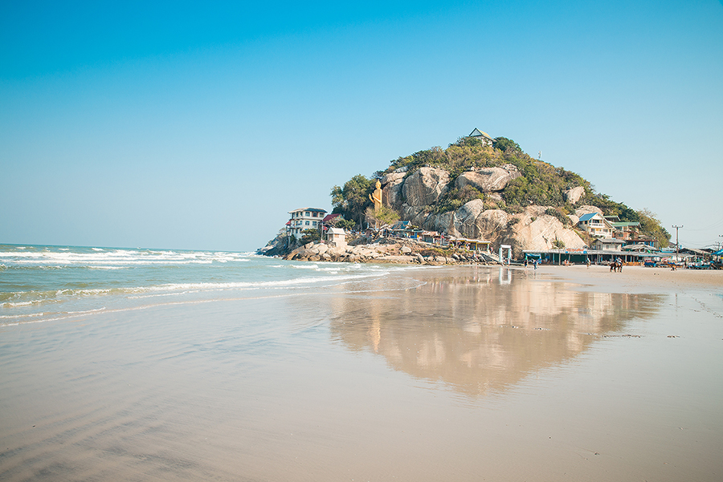
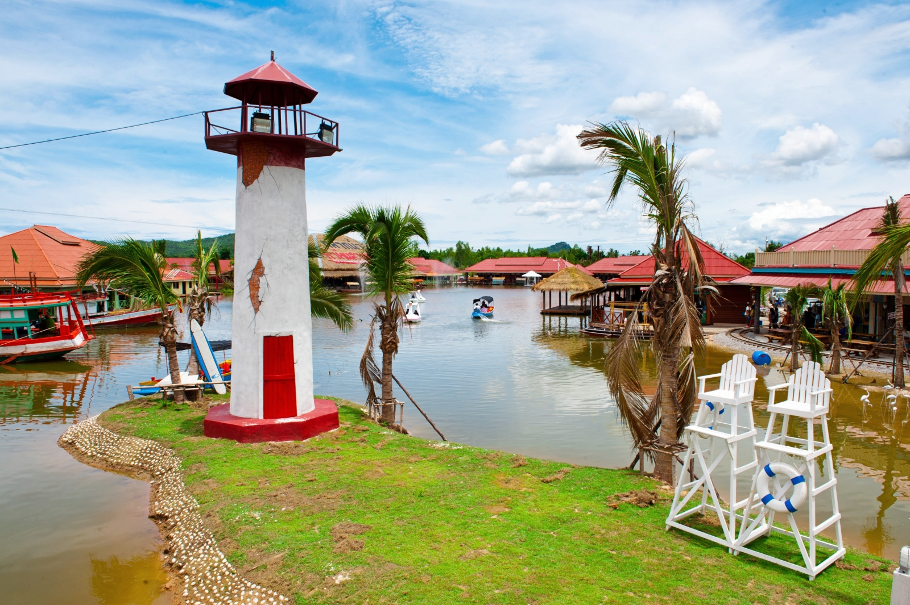
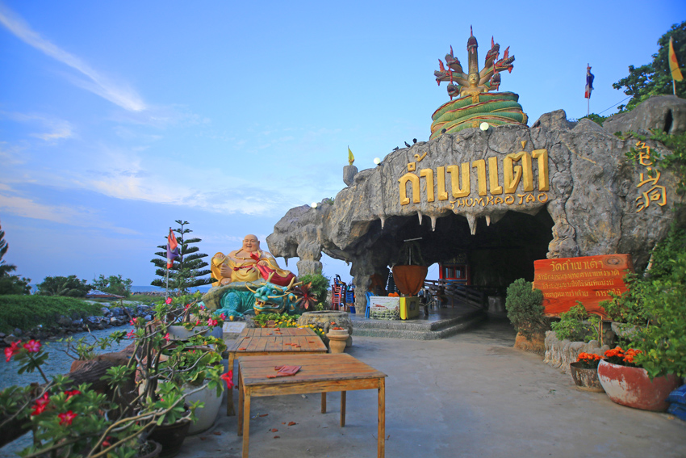
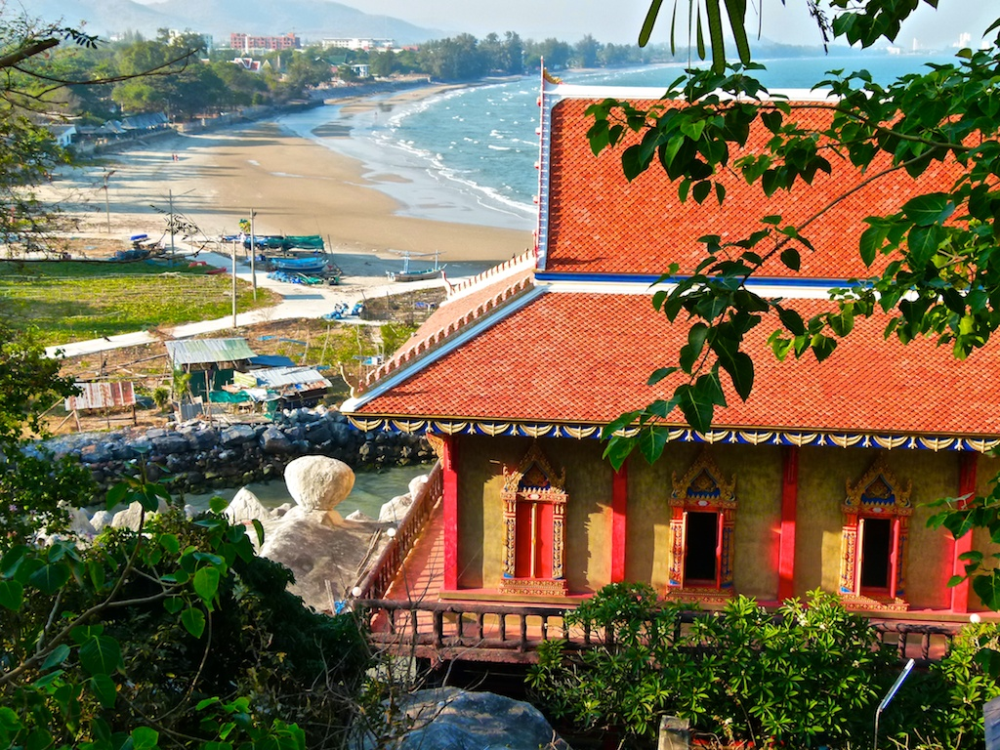

วัดเขาตะเกียบ

สถานที่ท่องเที่ยวใกล้วัดเขาตะเกียบ

หาดเขาตะเกียบเป็นชายหาดที่เงียบสงบในหัวหิน มีหาดทรายขาวละเอียด น้ำทะเลใส และมีกิจกรรมให้ทำ เช่น การเดินเล่น รับประทานอาหารทะเล หรือนั่งชมวิวที่วัดเขาตะเกียบ ซึ่งมีพระพุทธรูปปางห้ามสมุทรองค์ใหญ่ตั้งอยู่
สิ่งน่าสนใจ • หาดทรายขาวน้ำทะเลใส: หาดมีความยาวประมาณ 1.5 กิโลเมตร น้ำตื้นและคลื่นไม่แรง เหมาะแก่การลงเล่นน้ำหรือเดินเล่น
• วัดเขาตะเกียบ: ตั้งอยู่บนเขาตะเกียบ สามารถเดินขึ้นไปสักการะพระพุทธรูปปางห้ามสมุทรองค์ใหญ่ และชมวิวทะเลหัวหินได้อย่างสวยงาม
• บรรยากาศเงียบสงบ: ไม่พลุกพล่านเท่าหาดอื่น ๆ ในหัวหิน เหมาะแก่การพักผ่อน เดินเล่น หรือถ่ายรูป
• ร้านอาหาร: มีร้านอาหารทะเลตั้งอยู่เรียงรายตลอดแนวชายหาด
• จุดปล่อยปูม้า: ในซอยตะเกียบ 1 มีจุด «Blue Swimming Crabs Release Place» สำหรับปล่อยปูม้าคืนสู่ทะเล
การเดินทาง
• ขับรถจากตัวเมืองหัวหินมาทางทิศใต้ประมาณ 10 นาที จะถึงเขาตะเกียบ
• สามารถเดินทางไปได้ตลอดทั้งวัน นิยมไปตอนเย็นเพราะร่มเย็นสบายและแสงสวย
หาดเขาตะเกียบ
หาดเขาตะเกียบเป็นชายหาดที่เงียบสงบในหัวหิน มีหาดทรายขาวละเอียด น้ำทะเลใส และมีกิจกรรมให้ทำ เช่น การเดินเล่น รับประทานอาหารทะเล หรือนั่งชมวิวที่วัดเขาตะเกียบ ซึ่งมีพระพุทธรูปปางห้ามสมุทรองค์ใหญ่ตั้งอยู่
สิ่งน่าสนใจ • หาดทรายขาวน้ำทะเลใส: หาดมีความยาวประมาณ 1.5 กิโลเมตร น้ำตื้นและคลื่นไม่แรง เหมาะแก่การลงเล่นน้ำหรือเดินเล่น
• วัดเขาตะเกียบ: ตั้งอยู่บนเขาตะเกียบ สามารถเดินขึ้นไปสักการะพระพุทธรูปปางห้ามสมุทรองค์ใหญ่ และชมวิวทะเลหัวหินได้อย่างสวยงาม
• บรรยากาศเงียบสงบ: ไม่พลุกพล่านเท่าหาดอื่น ๆ ในหัวหิน เหมาะแก่การพักผ่อน เดินเล่น หรือถ่ายรูป
• ร้านอาหาร: มีร้านอาหารทะเลตั้งอยู่เรียงรายตลอดแนวชายหาด
• จุดปล่อยปูม้า: ในซอยตะเกียบ 1 มีจุด «Blue Swimming Crabs Release Place» สำหรับปล่อยปูม้าคืนสู่ทะเล
การเดินทาง
• ขับรถจากตัวเมืองหัวหินมาทางทิศใต้ประมาณ 10 นาที จะถึงเขาตะเกียบ
• สามารถเดินทางไปได้ตลอดทั้งวัน นิยมไปตอนเย็นเพราะร่มเย็นสบายและแสงสวย

ตลาดซิคาด้า (Cicada Market)
ตลาดซิเคด้า หรือตลาดจั๊กจั่น เป็นตลาดกลางคืนที่โดดเด่นในเรื่องศิลปะ งานฝีมือ และอาหาร ตั้งอยู่ที่สวนศรี หัวหิน จังหวัดประจวบคีรีขันธ์
ไฮไลต์และสิ่งน่าสนใจ
• โซนอาร์ต (Art A La Mode): เป็นพื้นที่แสดงงานศิลปะที่หลากหลาย ทั้งภาพวาด งานประติมากรรม และงานประดิษฐ์
• โซนสินค้าทำมือ (Handmade): มีร้านค้ามากมายที่ขายของตกแต่ง เสื้อผ้า เครื่องประดับ และของที่ระลึก ที่ออกแบบโดยศิลปินและช่างฝีมืออิสระ
• โซนอาหาร (Cicada Cuisine): มีอาหารให้เลือกชิมหลากหลายประเภท ทั้งอาหารไทย อาหารทะเล และของหวาน
• โซนการแสดง (Amphitheater): มีการแสดงดนตรีสด ละครเวที และการแสดงทางวัฒนธรรม
ข้อมูลทั่วไป
• วันและเวลาทำการ: เปิดเฉพาะวันศุกร์เสาร์และอาทิตย์ตั้งแต่เวลา 16:00–23:00น.
• ที่ตั้ง: อยู่ในสวนศรี เขาตะเกียบ หัวหิน

เป็นตลาดน้ำที่จำลองบรรยากาศย้อนยุคสมัยรัชกาลที่ 6 ตั้งอยู่ในอำเภอหัวหิน จังหวัดประจวบคีรีขันธ์ ภายในตลาดมีร้านค้ามากมายกว่า 200 ร้านค้า มีทั้งอาหารคาว-หวาน ของฝาก ของที่ระลึก และสินค้าหัตถกรรมให้เลือกซื้อ รวมถึงการแสดงวัฒนธรรมไทยที่จัดขึ้นให้ชม ตลาดเปิดให้บริการทุกวัน โดยไม่ต้องเสียค่าเข้าชม เปิดทุกวัน
ไฮไลต์และสิ่งน่าสนใจ
• สถาปัตยกรรมย้อนยุค: ตัวตลาดสร้างด้วยสถาปัตยกรรมแบบวิคตอเรีย บรรยากาศร่มรื่นสวยงาม เหมาะกับการเดินเล่นและถ่ายภาพ
• การแสดงวัฒนธรรม: มีการแสดงวัฒนธรรมไทยที่น่าสนใจหมุนเวียนกันไป
• การนั่งเรือและรถไฟ: มีบริการนั่งเรือชมบรรยากาศในตลาดน้ำ และรถไฟจิ๋วที่วิ่งรอบตลาดให้ได้เพลิดเพลิน
• ร้านค้าหลากหลาย: มีของกินอร่อยๆ และสินค้าให้เลือกมากมาย ทั้งของกินเล่น ของฝาก และงานฝีมือ
การเดินทาง
• จากตัวเมืองหัวหิน: ตลาดตั้งอยู่ห่างจากตัวเมืองไม่ไกลมาก สามารถเดินทางด้วยรถยนต์หรือรถสองแถวได้
• จากกรุงเทพฯ: ใช้เวลาเดินทางด้วยรถยนต์ประมาณ 2-3 ชั่วโมง ไปตามถนนเพชรเกษม (ทางหลวงหมายเลข 4)
ตลาดน้ำหัวหินสามพันนาม
เป็นตลาดน้ำที่จำลองบรรยากาศย้อนยุคสมัยรัชกาลที่ 6 ตั้งอยู่ในอำเภอหัวหิน จังหวัดประจวบคีรีขันธ์ ภายในตลาดมีร้านค้ามากมายกว่า 200 ร้านค้า มีทั้งอาหารคาว-หวาน ของฝาก ของที่ระลึก และสินค้าหัตถกรรมให้เลือกซื้อ รวมถึงการแสดงวัฒนธรรมไทยที่จัดขึ้นให้ชม ตลาดเปิดให้บริการทุกวัน โดยไม่ต้องเสียค่าเข้าชม เปิดทุกวัน
ไฮไลต์และสิ่งน่าสนใจ
• สถาปัตยกรรมย้อนยุค: ตัวตลาดสร้างด้วยสถาปัตยกรรมแบบวิคตอเรีย บรรยากาศร่มรื่นสวยงาม เหมาะกับการเดินเล่นและถ่ายภาพ
• การแสดงวัฒนธรรม: มีการแสดงวัฒนธรรมไทยที่น่าสนใจหมุนเวียนกันไป
• การนั่งเรือและรถไฟ: มีบริการนั่งเรือชมบรรยากาศในตลาดน้ำ และรถไฟจิ๋วที่วิ่งรอบตลาดให้ได้เพลิดเพลิน
• ร้านค้าหลากหลาย: มีของกินอร่อยๆ และสินค้าให้เลือกมากมาย ทั้งของกินเล่น ของฝาก และงานฝีมือ
การเดินทาง
• จากตัวเมืองหัวหิน: ตลาดตั้งอยู่ห่างจากตัวเมืองไม่ไกลมาก สามารถเดินทางด้วยรถยนต์หรือรถสองแถวได้
• จากกรุงเทพฯ: ใช้เวลาเดินทางด้วยรถยนต์ประมาณ 2-3 ชั่วโมง ไปตามถนนเพชรเกษม (ทางหลวงหมายเลข 4)


วัดถ้ำเขาเต่า
เป็นวัดริมทะเลที่ตั้งอยู่บนภูเขาในเขตตำบลหนองแก อำเภอหัวหิน จังหวัดประจวบคีรีขันธ์ วัดนี้เป็นที่นิยมของนักท่องเที่ยวที่ต้องการทำบุญและชมวิวทิวทัศน์ที่สวยงามของทะเล
ไฮไลต์และสิ่งน่าสนใจ
• พระพุทธศากยชินมหาราช: พระพุทธรูปขนาดใหญ่ประดิษฐานอยู่บนยอดเขา
• วิวทะเล: มีจุดชมวิวทะเลทั้งจากบริเวณเชิงผาและบนยอดเขา
• ทำบุญและสักการะ: ภายในวัดมีพระพุทธรูปและสิ่งศักดิ์สิทธิ์ให้กราบไหว้หลายจุด
• ถ้ำเขาเต่า: มีทางเดินเข้าไปในถ้ำเพื่อกราบไหว้เจ้าแม่กวนอิม
• บรรยากาศ: เป็นวัดที่เงียบสงบ เหมาะแก่การพักผ่อน
การเดินทาง
• ปีนบันได: ต้องเดินขึ้นบันไดพอสมควรเพื่อไปกราบพระบนยอดเขา
• ทางเข้าจากหาดทรายน้อย: สามารถขึ้นไปได้อีกเส้นทางหนึ่ง
• ที่จอดรถ: จอดรถบริเวณอ่างเก็บน้ำเขาเต่า แล้วเดินเข้าวัดราว 200–300 เมตร
• รอบวัดมีร้านของฝากและอาหารทะเลหลายร้าน เหมาะแก่การพักผ่อน